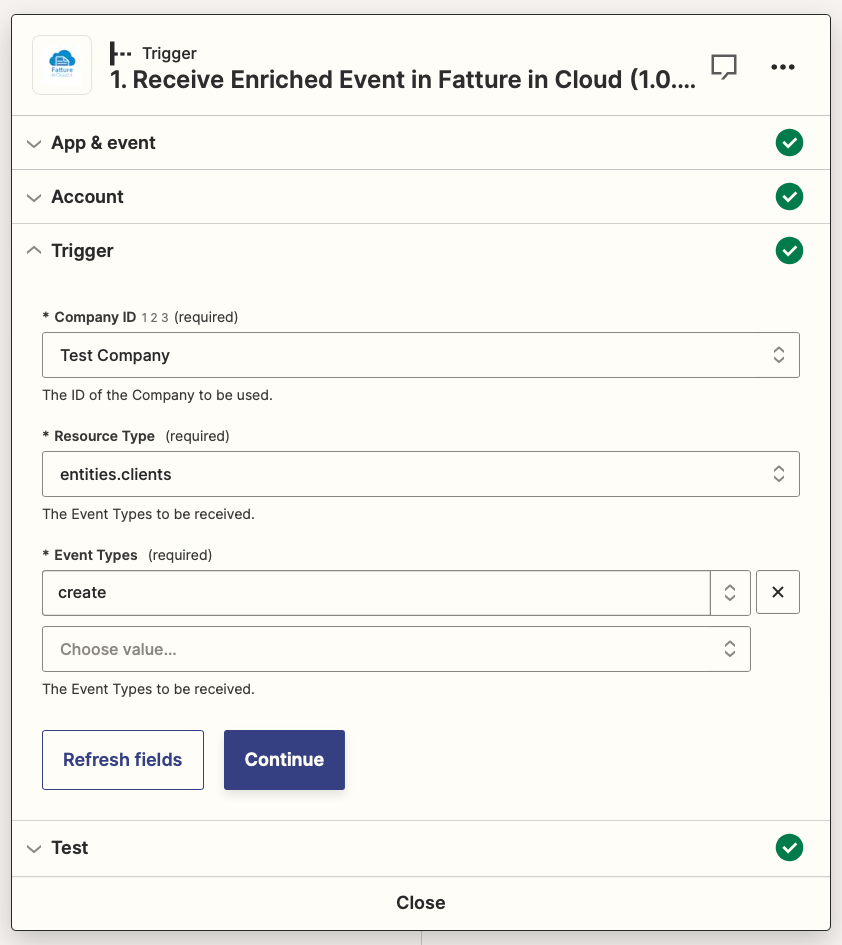
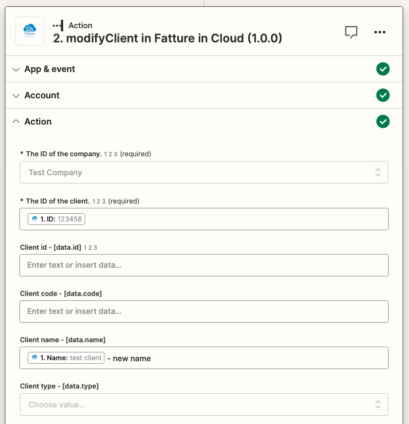

Zapier Quickstart
In this guide, we'll explain how to use Zapier to integrate TSE in Cloud with thousands of other services.
:::danger Open Beta The Zapier integration is published but is still in the beta phase, please contact us if you experience some kind of issue using it. :::
:::info Do you feel lost? If you need help with the usage of the Zapier integration, feel free to open a new Discussion in our Community!
If instead you are experiencing a malfunctioning or you think that you found a bug in our integration, please check the Support Page! :::
 What is Zapier?
What is Zapier?
Zapier is a platform made to create automated workflows without the need to write a single line of code, all you will see is an intuitive drag-and-drop editor, here you can find the home page of the TSE in Cloud Zapier integration.
 In which cases is it useful?
In which cases is it useful?
Zapier is a no-code workflow builder, and its main objective is to make automation available to non-technical people. It can help you building a workflow rapidly, without having to learn a programming language to do it.
If you are a developer you can still use Zapier to build simple workflows rapidly, without having to take care of tedious tasks such as authentication and implementation of the API methods.
:open_book: Base concepts
A Zapier workflow is called a Zap. Each Zap consists of a trigger and one or more actions. When you turn on your Zap, it will run the action steps every time the trigger event occurs.
A trigger is an event that starts a Zap. For example, if you want to update an Excel file each time an invoice gets created, the trigger is ‘new invoice created’.
An action is an event a Zap performs after it is triggered. For example, if you want to update an Excel file each time an invoice gets created, the action is 'Edit Excel Sheet’.
Let's get more into the specific details of the TSE in Cloud Zapier Integration.
 Triggers
Triggers
If you try to set up a TSE in Cloud trigger you will see that 2 triggers are available:
- Raw Trigger: this trigger makes available to the following actions only the IDs of the interested resources
- Enriched Trigger: this trigger makes available to the following actions the complete resource with all the fields
So if you need to set up a trigger that sends an email to the customer when an invoice gets created it is enough the raw trigger (as you need only the ID to use the Schedule Email method), but if you need to sync an Excel sheet when an invoice gets created then you will need the enriched trigger (as you need the complete invoice body).
:::warning Watch the limits! Keep in mind that the enriched trigger makes a get request under the hood to retrieve the resource body, so it will erode your API limits. :::
:::info How do triggers work? The TSE in Cloud's Zapier Triggers are based on our Webhooks functionality. When you use a trigger, it creates a new subscription and starts listening to the notifications generated when something occurs on the resources. If you want more detail or you are just curious, you can check the dedicated pages (but you don't need to read them to use our triggers!). :::
Let's create a trigger then:
- create a new Zap
- choose the TSE in Cloud app
- choose the Enriched Trigger
- login with TSE in Cloud if you haven't already
- select the type of trigger you need and select your company, in this example, we are setting up a trigger when a client gets created:

Now you can test the trigger, this test will retrieve a client (or a different type of resource, depending on the selected trigger type) directly from your TSE in Cloud account so you can test the following actions with real data, keep in mind that if you don't have any resource of the needed type in your account you will get an error.
:::info Trigger availability Not every type of trigger is currently available, you can check here to see if the notification type you need is currently active. :::
:running_man: Actions
To understand what Zapier Actions can do for you, first, you must understand how our APIs work.
The TSE in Cloud APIs provide a wide set of methods that let you interact with your account's resources giving you full control over them, by providing the following standard operations:
- Get Methods: to read the current status of the resource
- Create Methods: to create a new resource
- Modify Methods: to update an existing resource
- Delete Methods: to delete an existing resource
You can check the list of all the methods provided by our APIs in our API Reference.
Every Zapier Action implements one of our API methods, making that method available to be used in your Zaps.
In the following simple example, we'll show you how to modify a client's name using the Modify Client action.
- choose the event you need from the list of available methods, in this case, the "modifyClient" event
- login with TSE in Cloud if you haven't already
- select your company from the dropdown menu
- fill in the client ID and the fields you want to edit (in this case only the name):

Now you can test the action and see if it works as expected.
:::info How can I know how to use an action?
Since the Zapier Actions are just an implementation of our API Methods, they provide the same fields and perform the same behavior that you would obtain by using our APIs directly. So we suggest you check our Guides that illustrate how to use our APIs to perform the most common use cases. You just need to map the fields used in the guide to the related ones provided by the Zapier Action.
If you still have some doubts, you can check our Support Page and ask for help.
:::
 Turn on the Zap
Turn on the Zap
At this point we created a Zap that for each client created on TSE in Cloud edits the name by adding "- new name", you can turn it on with the button at the top of the page and test the Zap by creating a client on the TSE in Cloud web application to see if the name gets modified.
 Have fun!
Have fun!
Probably the newly created Zap won't be useful in a real environment, but with Zapier you can create lots of useful workflows, for example, you could use the Create Issued Document action to create an invoice when an order on your Shopify store gets created, or when you receive a payment in your Stripe account, the possibilities are endless as Zapier supports 6000+ services at the moment and it's always adding more.
 Additional resources
Additional resources